Edgar never has to be cast. His eminence works from the command zone: every other Vampire spell you cast brings a free 1/1 Vampire token with it. Thirty-nine Vampires here, all but two costing four mana or less, so from turn one every creature you cast is two bodies — and the lords pump the tokens too. Removal aimed at your commander does nothing, because the engine was never on the battlefield. It only counts Vampires you CAST. Bloodghast returning from the graveyard, the Demonic Tutor copy from Emeritus of Woe and the Exsanguinate copy from Stensian Sanguinist make no token. The commander 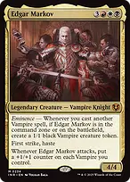Edgar Markoveminence makes a 1/1 black Vampire whenever you cast another Vampire, with Edgar on the battlefield or still in the command zone. Casting him is the late-game bonus: six mana for first strike, haste, and a +1/+1 counter on every Vampire each time he attacks. 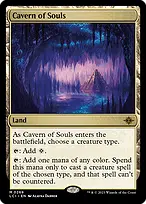Cavern of Soulsname Vampire: your creatures can't be countered, and it taps for any colour to cast them. 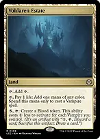Voldaren Estatepay 1 life for any colour to cast a Vampire; late game it turns spare mana into Blood tokens. Three Tree Cityname Vampire, then {2} and a tap makes one mana of a colour for every Vampire you control. 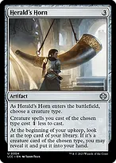Herald's Hornname Vampire: each one costs one less, and every upkeep a Vampire on top of your library goes to your hand. Lords — the tokens get pumped too 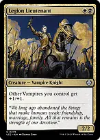Legion Lieutenanttwo mana: other Vampires +1/+1. 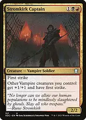Stromkirk Captainother Vampires +1/+1 and first strike. 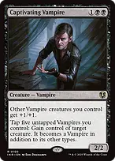Captivating Vampireother Vampires +1/+1, and tapping five Vampires steals any creature for good. 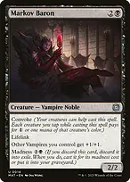Markov Baronother Vampires +1/+1. Convoke lets your tokens help cast it. 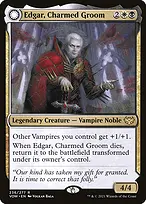Edgar, Charmed Groom // Edgar Markov's Coffinother Vampires +1/+1. When it dies it returns as a coffin that makes a lifelink Vampire each upkeep and turns back into Edgar after three. 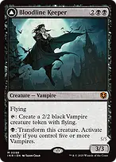Bloodline Keeper // Lord of Lineagetaps for a 2/2 flying Vampire every turn. With five Vampires out, {B} transforms it into Lord of Lineage: other Vampires +2/+2. 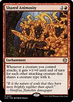Shared Animosityevery attacking Vampire gets +1/+0 for each OTHER attacking Vampire. Ten attackers each get +9/+0. Anointed Processiondoubles every token — Edgar's, Bloodline Keeper's, Mavren Fein's. 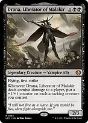Drana, Liberator of Malakira first-strike flier. When it connects, every attacking creature gets a +1/+1 counter before regular damage is dealt. Drain — how the games end 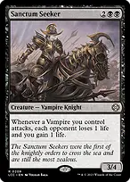Sanctum Seekerevery Vampire that attacks makes each opponent lose 1 and you gain 1. Twelve attackers is 12 from everyone before blockers. 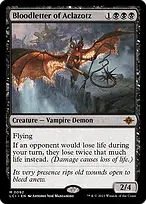Bloodletter of Aclazotzduring your turn, opponents lose twice as much life — combat damage included. Sanctum Seeker, Cruel Celebrant and your whole attack double. 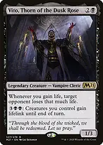Vito, Thorn of the Dusk Rosewhenever you gain life, one opponent loses that much. Every drain here gains you life, so each one hits a second time. 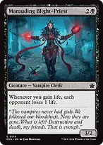Marauding Blight-Priestwhenever you gain life, each opponent loses 1. With Sanctum Seeker, Vito and Bloodletter all out, each attacking Vampire costs every opponent 4 life and one of them 2 more. 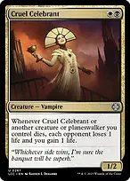Cruel Celebrantwhenever one of your creatures dies, each opponent loses 1 and you gain 1. Blood Artistwhenever ANY creature dies, a player of your choice loses 1 and you gain 1. 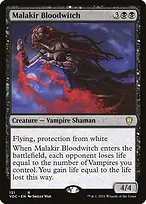Malakir Bloodwitchwhen it enters, each opponent loses 1 life per Vampire you control, and you gain it all. 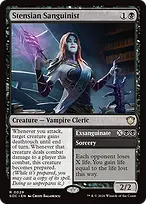Stensian Sanguinist // Exsanguinatewhenever you attack, a creature gets deathtouch; if it connects, the Sanguinist becomes prepared and you can cast a copy of Exsanguinate — X from each opponent, all of it back to you. 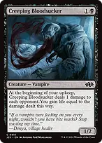Creeping Bloodsucker1 damage to each opponent every upkeep, and you gain it back. 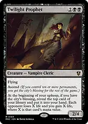Twilight Prophetonce you control ten permanents, each upkeep you take the top card and drain everyone for its mana value. 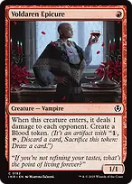Voldaren Epicurea one-drop that pings each opponent and leaves a Blood token. Sacrifice — making sweepers pay you Viscera Seera free sacrifice outlet. In response to a sweeper, sacrifice everything: Blood Artist, Cruel Celebrant, Cordial Vampire and Elenda turn the wipe into a drain. 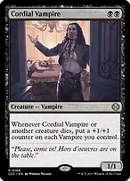Cordial Vampirewhenever one of your creatures dies, every Vampire you control gets a +1/+1 counter. 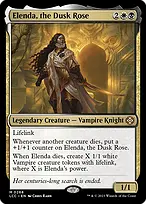Elenda, the Dusk Rosegrows with every creature that dies, then leaves that many lifelink Vampires when it dies. 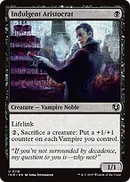Indulgent Aristocrat{2} and a sacrifice: a +1/+1 counter on every Vampire. 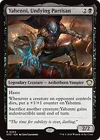Yahenni, Undying Partisanhaste, grows as their creatures die, and sacrifices another creature to become indestructible. 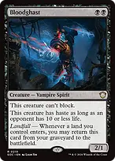Bloodghastcomes back from the graveyard whenever a land enters under your control. 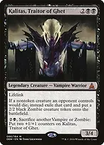Kalitas, Traitor of Ghetlifelink, and their nontoken creatures that die are exiled and become your 2/2 Zombies. Cards Necropotenceskip your draw step, then pay 1 life for each card you want, delivered at end of turn. The drains pay it back. Skullclampequip a 1/1 token and it dies: two cards for one mana. Black Market Connectionseach first main phase, pick any of: a Treasure for 1 life, a card for 2, a 3/2 changeling for 3. Changelings are every creature type, so the token counts as a Vampire for your lords and Sanctum Seeker. Welcoming Vampireonce a turn, a card when creatures with power 2 or less enter — your tokens always do. 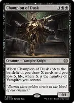Champion of Duskwhen it enters, draw a card and lose 1 life for each Vampire you control. 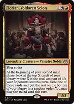Florian, Voldaren Scionafter combat, look at one card per point of life your opponents lost this turn, and play one of them. 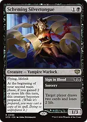Scheming Silvertongue // Sign in Blooda flying lifelinker. If you gained 2 life before your second main phase, it lets you cast a copy of Sign in Blood. 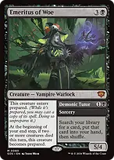Emeritus of Woe // Demonic Tutora 5/4 that enters with a free copy of Demonic Tutor ready to cast, and gets another whenever two creatures die in a turn. 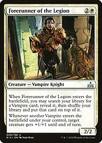Forerunner of the Legionputs any Vampire on top of your library, then pumps a creature whenever another Vampire enters. 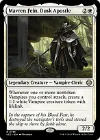Mavren Fein, Dusk Apostlea 1/1 lifelink Vampire whenever your nontoken Vampires attack. Smothering Titheevery card an opponent draws is two mana from them or a Treasure for you. Mana Sol Ringthe fastest start. Arcane Signetany of your three colours. Talisman of Hierarchywhite or black. 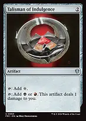Talisman of Indulgenceblack or red. 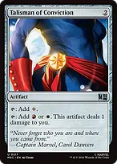Talisman of Convictionred or white. 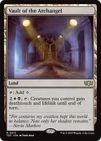Vault of the Archangel{2}{W}{B} gives your whole team deathtouch and lifelink — and with Vito or Marauding Blight-Priest out, every point of lifelink is a drain. Answers Swords to Plowsharesone mana, any creature. Path to Exilethe second one. 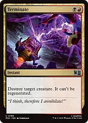Terminatetwo mana, no regeneration. Anguished Unmakingany nonland permanent for 3 life. 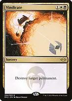Vindicateany permanent. Deadly Rollickexile a creature. Free only while Edgar is on the battlefield; four mana otherwise. Chaos Warpthe red answer to anything. 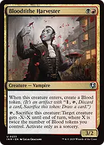Bloodtithe Harvestera 3/2 for two that later sacrifices itself to shrink a creature by twice your Blood tokens. 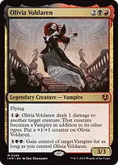Olivia Voldaren{1}{R}: ping a creature and grow. Late game, {3}{B}{B} steals a Vampire. 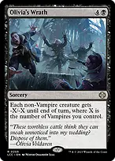Olivia's Wratha one-sided sweeper: every non-Vampire gets -X/-X, where X is how many Vampires you control. Charismatic Conquerortheir creatures and artifacts enter tapped, or you get a lifelink Vampire. Protection Teferi's Protectionthe whole board phases out until your next turn. Clever Concealmentphases out any of your nonland permanents; convoke means your tokens pay for it. Flawless Maneuveryour creatures are indestructible. Free only while Edgar is on the battlefield; three mana otherwise. 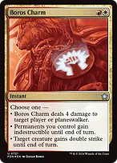Boros Charmindestructible for everything, or 4 damage to a player. Akroma's Willflying and double strike, or lifelink, indestructible and protection from every colour — both with Edgar on the battlefield. 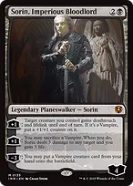Sorin, Imperious Bloodlorddeathtouch and lifelink each turn, or sacrifice a Vampire for 3 damage; −3 puts a Vampire from your hand straight onto the battlefield. What to keep in an opening hand Keep two or three lands and at least two cheap Vampires. A one-drop on turn one is two bodies; two two-drops on turn three is four more. Don't cast Edgar until you need him. The tokens come from the command zone; cast him when six mana has nothing better to do, or when his attack counters win the game. Play around sweepers. Past five or six creatures, hold Viscera Seer, Teferi's Protection or Clever Concealment before adding more. Necropotence costs life, and so does Black Market Connections. Count your life against what the table can do to you before paying.